育てる
省耕起・省資源型の自然農法稲作や大豆栽培に取り組み、地域で食べ続けられる生産と備蓄の基盤をつくる。
SHINDOAIZU / OKU-AIZU
NATURAL FARMING → LIFE-BASE BUILDING
SHINDOは、福島県・会津／奥会津を拠点に、自然農法の確立、耕作放棄地の再生、古民家の再生、自然環境の整備、学びの場づくりを進めるプロジェクトです。食・住・エネルギー・健康・共育──生命の基盤を、自分たちの手で創り直しています。
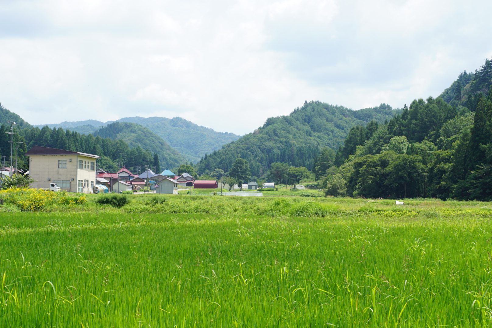
一 / 01
WHY SHINDO
農業を入口に、暮らしの基盤をつくり直す。
食べるもの、住む場所、使うエネルギー、健康を支える習慣、子どもと大人が学ぶ環境。
私たちは、暮らしを支えるものの多くを、いつの間にか遠くの仕組みに委ねるようになりました。
SHINDOが目指しているのは、単に農業を大きくすることではありません。毎年実る土、住み継げる家、生き抜く知恵、そして共に創る仲間を、次の世代に残る「暮らしの基盤」として育てることです。
二 / 02
FIELD NOTES
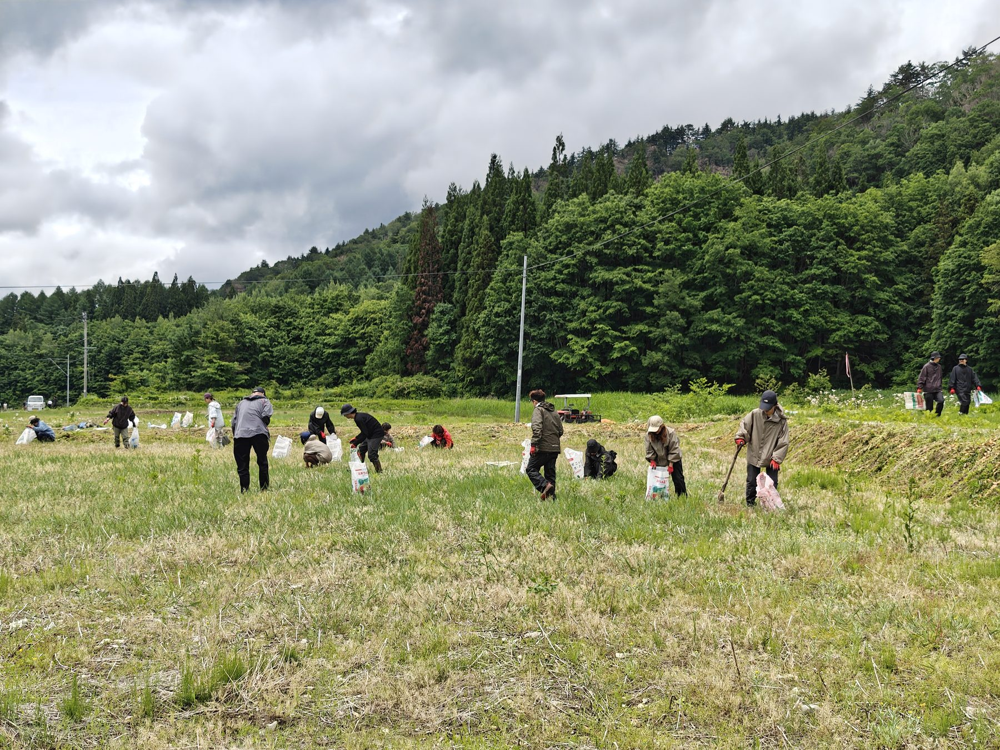
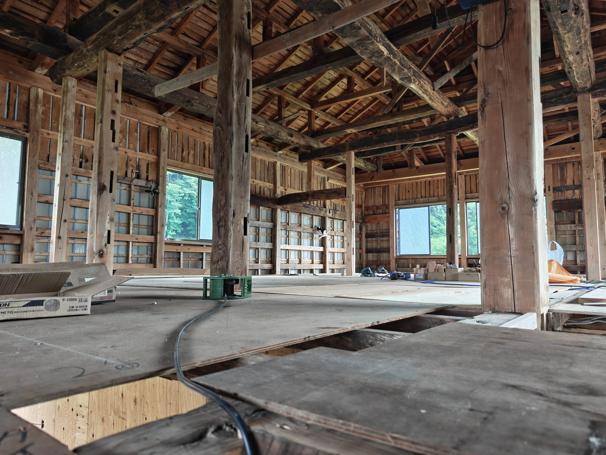
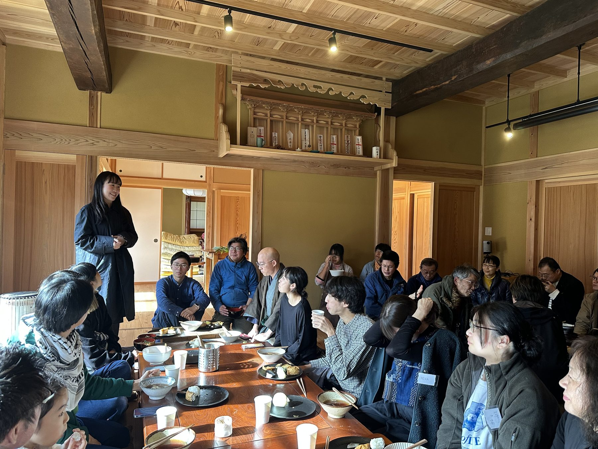
三 / 03
WHAT WE DO
省耕起・省資源型の自然農法稲作や大豆栽培に取り組み、地域で食べ続けられる生産と備蓄の基盤をつくる。
耕作放棄地、水路、森、古民家、農業倉庫を、人が再び使える場所へ戻していく。
中山間地に合う農業機械をつくり、地域でまかなえるエネルギーや新しい暮らしの仕組みを検証する。
援農、学生プログラム、共同生活、対話の場を通じて、子どもも大人も一緒に学び、育ち合う。
四 / 04
PROJECTS
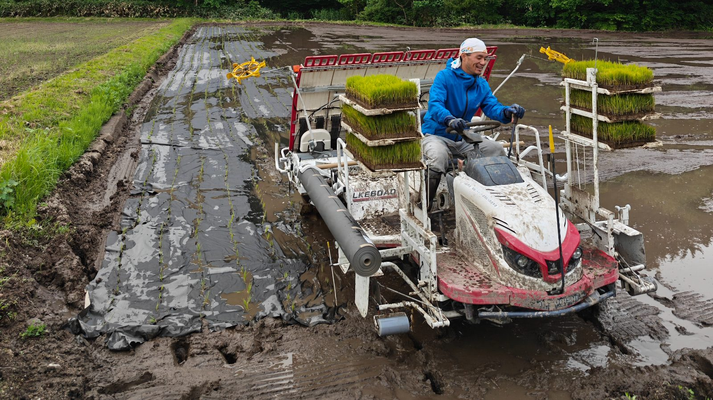
標高800mの豪雪地で、大型トラクターに頼りきらない稲作を実証中。反収6俵が当面の目標です。
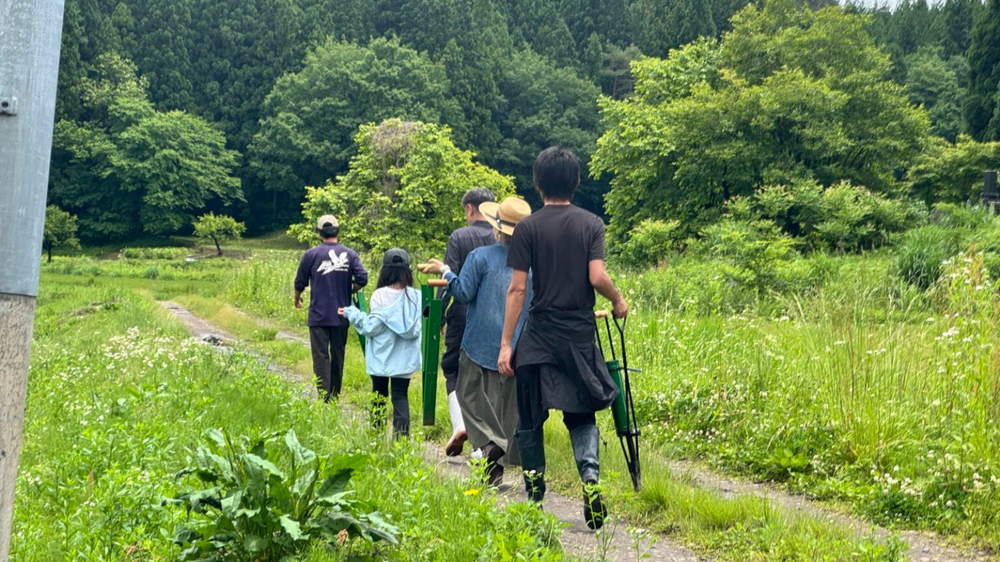
都市と農をつなぐ、循環する暮らしの実践共同体。関わる人が生産の現場に立ち続けられる関係を、共に設計しています。
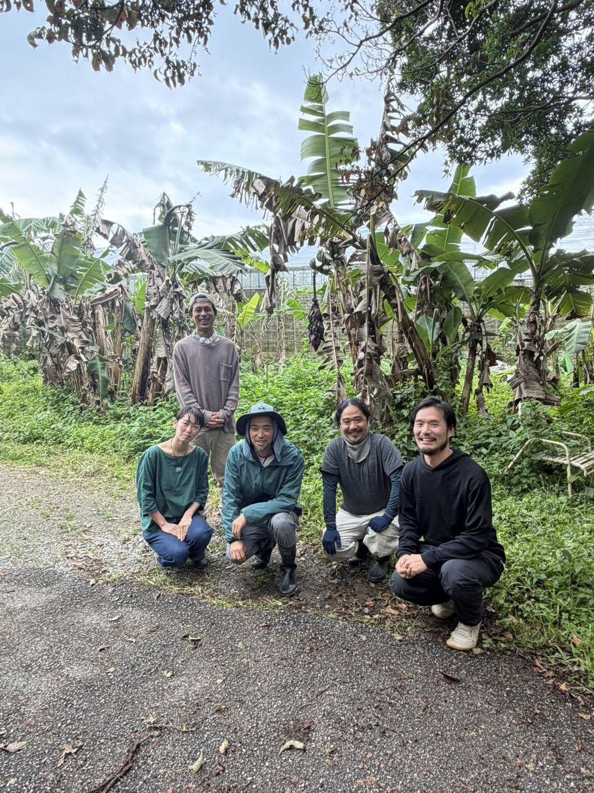
「死ぬまで幸せに暮らせる社会（IKIGAI）」を掲げ、移住者が経営を引き継ぐ。2026年、新たな農園としてスタートを切りました。
五 / 05
PEOPLE & NETWORK
SHINDOの起ち上げメンバー、活動基盤となる自然農法無の会、現場を支える技術者さん、全国から集まるパートナーさん、昭和村にて共に活動をしている村の住民の方々が、この活動をつくっています。
六 / 06
TRAJECTORY IN NUMBERS
活動基盤「自然農法 無の会」＋ZEN-BU
23 ha
自然農法 無の会は、福島県内で最大級の有機稲作面積を担う、創業21年目の有機農場です。
会津での実践開始から現在まで
2021 → 2025
2021年に有機・自然農法の実践を開始し、2023年にZEN-BUを創業。2025年にSHINDOへ名称変更。
株式会社ZEN-BU ／ 全国から参加
30 組
プレゼンと対話を通じて、全国の企業・個人との共創が始まっています。
自然農法 無の会＋ZEN-BU ／ 2025年
400 名以上
援農、事業づくり、食事づくりなど、それぞれの形で現場を支える人が絶えず訪れています。
人物索引
PEOPLE
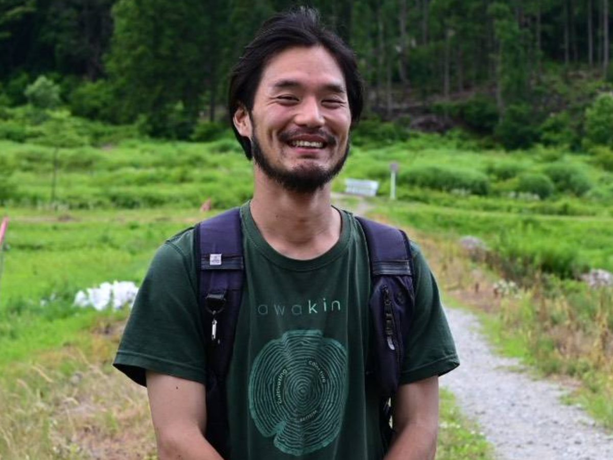
発起人・ZEN−BU代表
学者を志したのち、より本質に近い生業を求めて自然農法の道へ。全国30件以上の農家を巡り、2021年に会津へ移住。
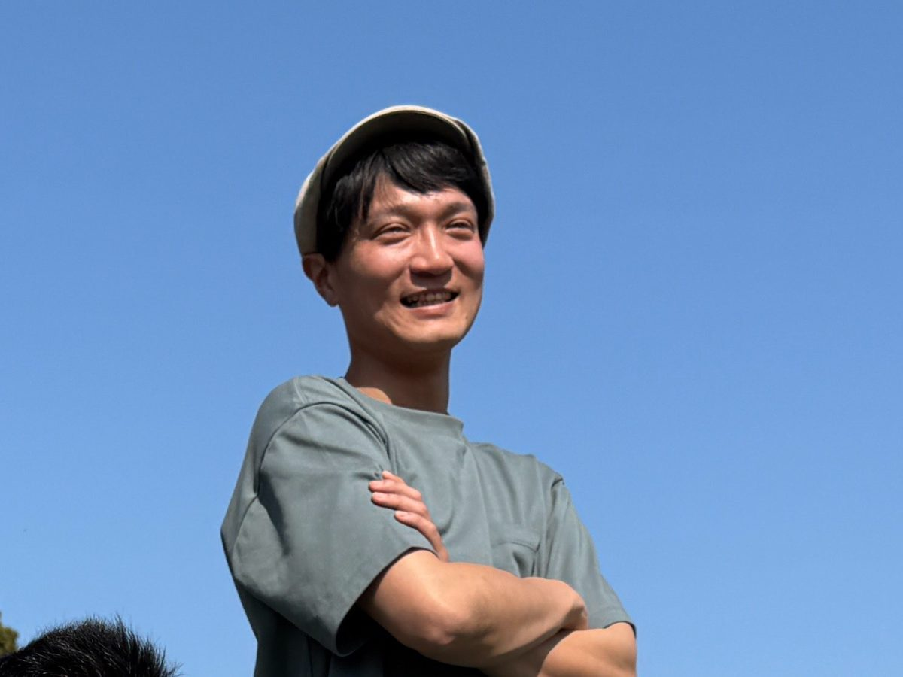
起ち上げ仲間・無の会
三年前、都内の企業を辞めて会津へ。土と時代の両方を見つめ、新たな時代の食糧生産を探求しています。
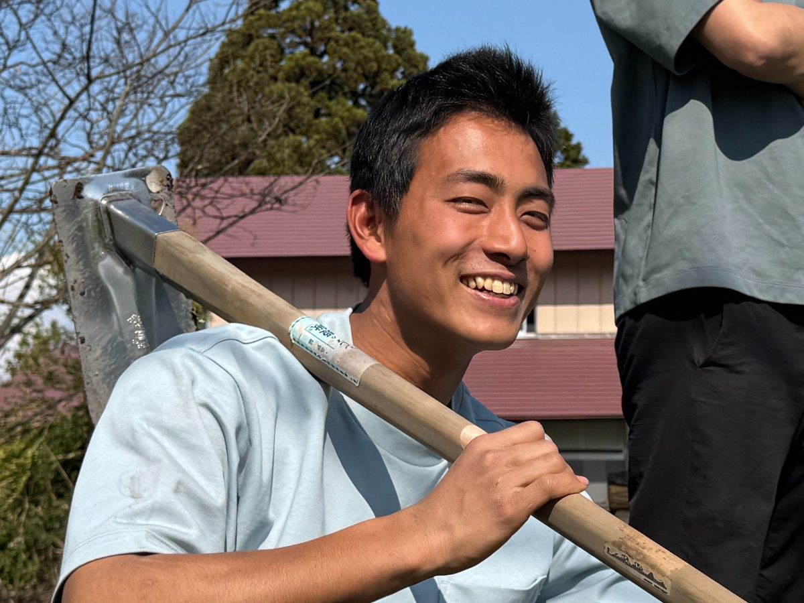
起ち上げの仲間・ZEN-BU
大学四回生の冬に会津へ。教育と環境整備を担い、都市の学生と田舎の農業をつなぐ橋渡し役です。
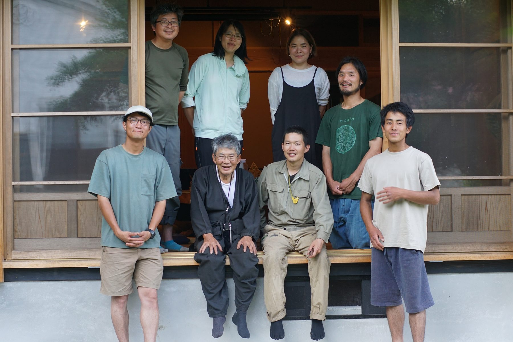
活動基盤
創業21年、県内最大規模の有機JAS農家。SHINDOの実践知の源。
七 / 07
MEMBER & PARTNERSHIP
援農や視察を通して、土地、人、活動を知る。
援農・視察について相談する →この村に住み、5〜10年かけて、暮らしと社会を一緒につくる。家族での移住も歓迎。
条件を見る →今の仕事や生活を続けながら、月1回から隔月程度、会津へ通う。
関わり方を見る →資金、技術、仕事を通して、未来に残る基盤を支える。
詳細を見る →GRAND VISION / 最終章